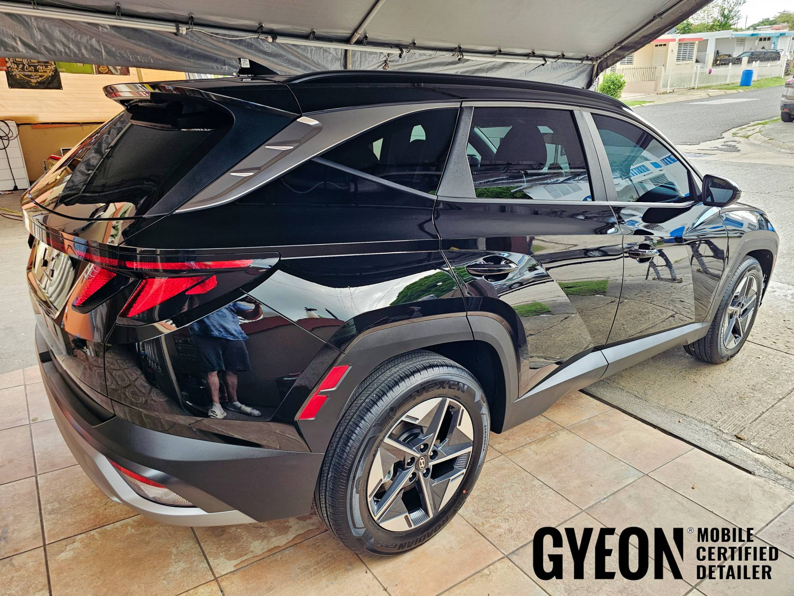
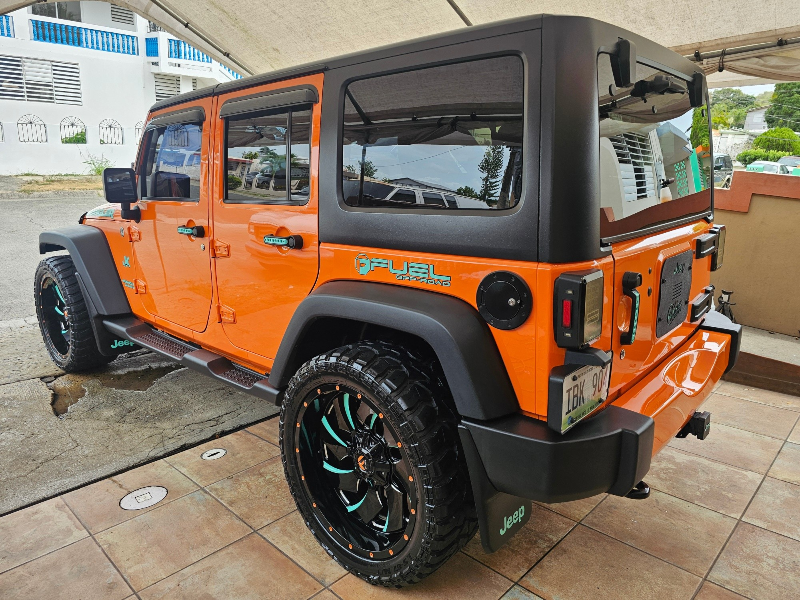
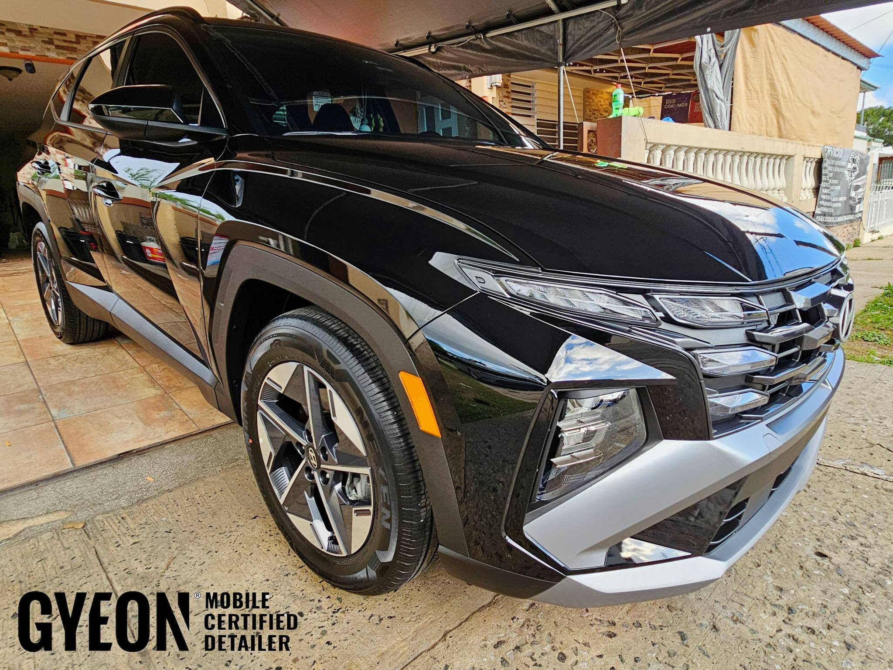
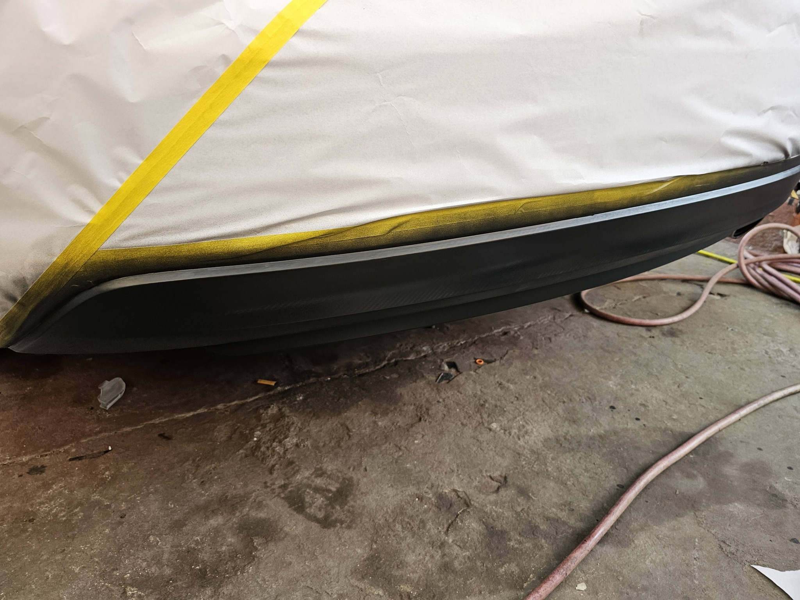
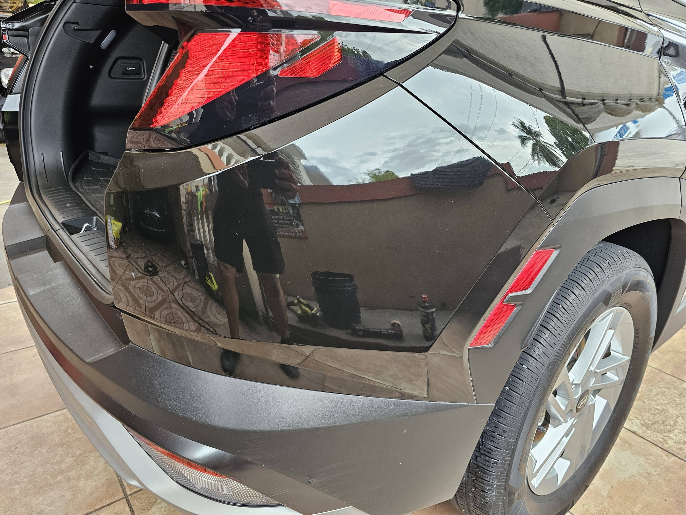
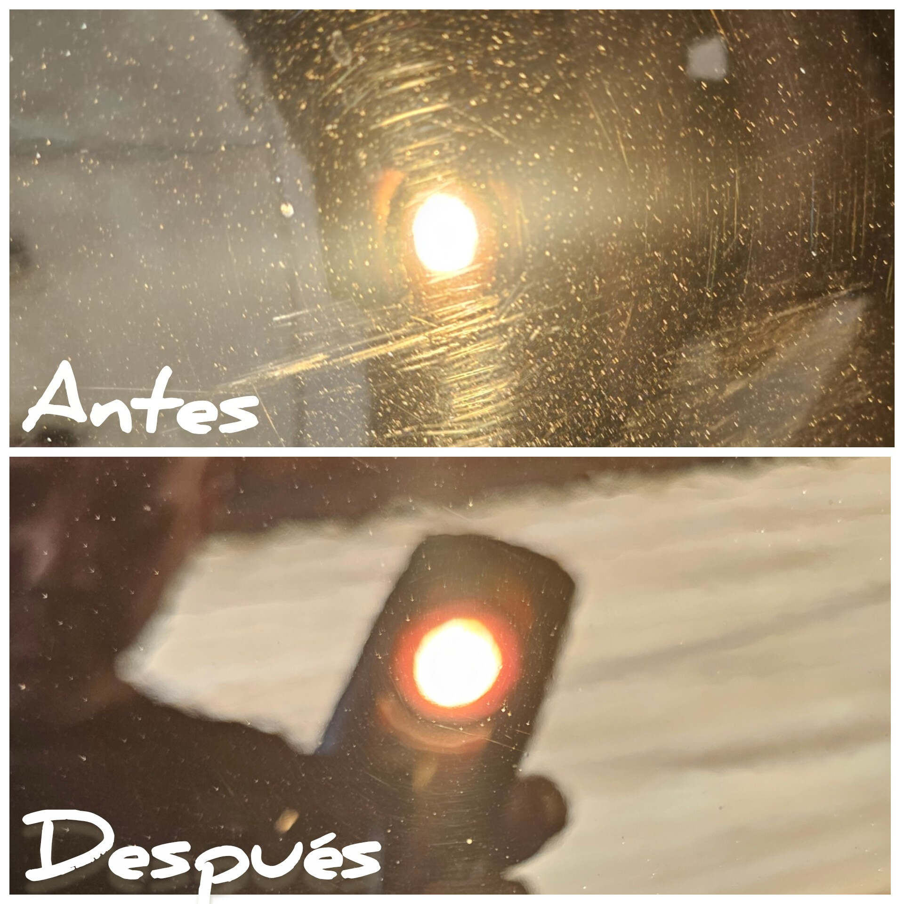
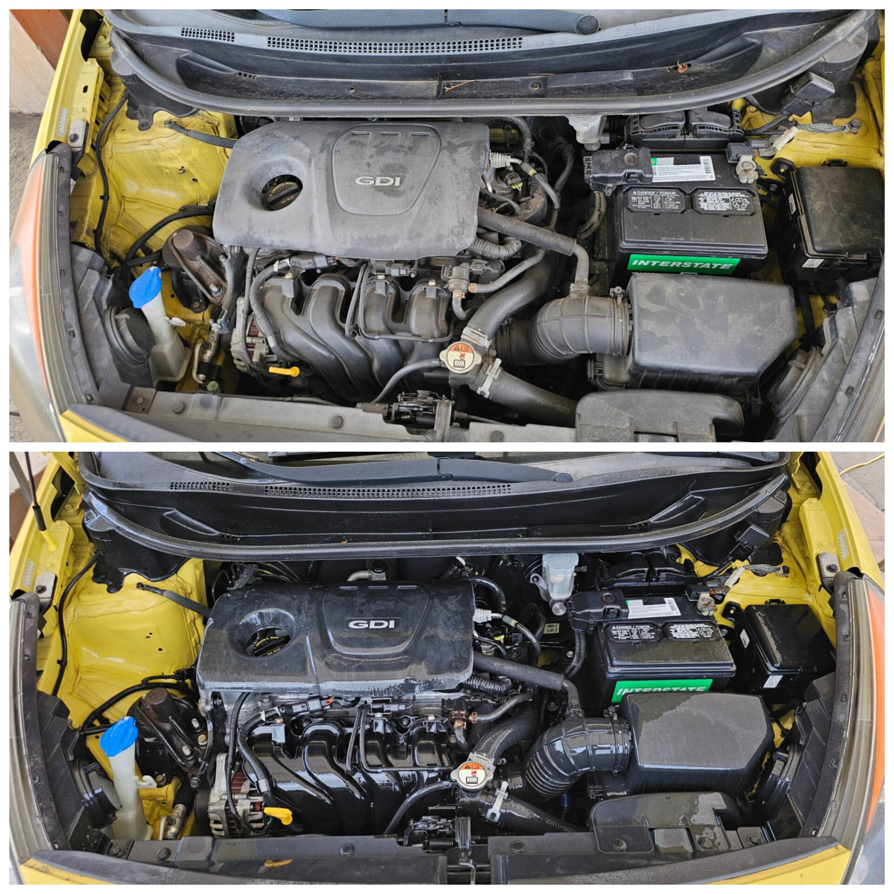

Full detailing
Detailing completo interior y exterior, meticuloso de principio a fin.

LAJAS - DETAILING Y CERAMICO
Nos especializamos en el detallado automotriz, un proceso que va mas alla de un lavado. Full detailing, correccion y ceramico GYEON certificado.
(939) 438-9341 - Lajas, PR
Quienes somos
En JL Car Wash & Detailing el detallado es un proceso completo: descontaminacion de pintura, correccion, y proteccion con recubrimientos ceramicos avanzados GYEON. Cada unidad sale meticulosamente detallada, protegida y con su brillo original de vuelta.

Lo que hacemos
Detailing completo interior y exterior, meticuloso de principio a fin.
Limpieza profunda que prepara la pintura para corregir y proteger.
Corregimos marcas y swirls para devolverle profundidad y claridad a la pintura.
Proteccion con recubrimientos ceramicos avanzados GYEON Can Coat Pro.
Motor limpio y protegido, con el cuidado que ese trabajo exige.
Focos delanteros restaurados con aplicacion de clear coat.
Trabajos reales





Asi de facil
Cuentanos tu auto y lo que necesita por WhatsApp.
Descontaminacion, correccion y proteccion ceramica segun tu unidad.
Recibes tu coche detallado y protegido con GYEON.
Preguntas frecuentes
El lavado limpia la superficie. El detailing descontamina, corrige y protege la pintura: es un proceso completo, no un lavado rapido.
Trabajan con recubrimientos ceramicos avanzados GYEON, incluyendo Can Coat Pro.
Si, lavado de motor con proteccion, y restauracion de focos con clear coat.
Por WhatsApp al (939) 438-9341. Escribenos y coordinamos tu espacio en Lajas.
Cotiza ahora
Llena el formulario y se abre WhatsApp con tu solicitud lista para enviar.
O escribenos directo: WhatsApp - (939) 438-9341